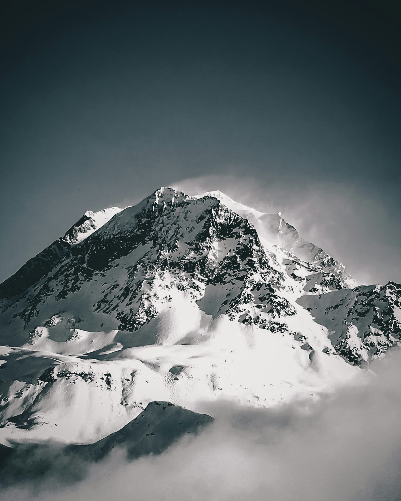

About This Project
Why France, what the land itself has to say, and how it points back to a Creator.
My Personal Ties to France
From 2022-2024, I was called to be a missionary for the Church of Jesus Christ of Latter-day Saints to the Paris, France mission. While I was there I had the opportunity to travel to many different regions of France, and I was able to see the beauty of the land and the people. Ever Over my time there I learned a lot about the history, culture, and geography of France, and I developed a deep appreciation for the country and its people. That is why I wanted to dedicate this project to the physical geography of France, and to share what I learned with others while I was there.
A Physical Geography Fact

Mont Blanc, translated as White Mountain in english, is the highest peak in the French Alps and is the highest mountain in Western Europe, standing at 4,809 meters (15,777 feet) above sea level. Despite the summit being in French territory the mounatin is considered to be on internation ground meaning that it is shared between France and Italy. The mountain does stretch into parts of Switezerland as well, and is a popular destination for mountaineers and hikers from around the world. In the surounding areas of Mont Blance there are many glacial lakes, alpine meadows, and forests that are home to a variety of wildlife, including ibex, chamois, and marmots (Lambert, 2024).
Reflection: Alma 30:44

"...all things denote there is a God; yea, even the earth, and all things that are upon the face of it, yea, and its motion, yea, and also all the planets which move in their regular form do witness that there is a Supreme Creator."
Reflection:
When I was in France, there were many times that I was simply in awe of the beauty of the land, the culture of the people, and magnificent history of the country. In the scripture above it states that "all things denote there is a God," and I believe that this is true as France is a perfect testimony of that. When you take a moment to stop and ponder on the beatuy and magesty of what is around you, it is hard not to feel gratitude and love from our divine creator.